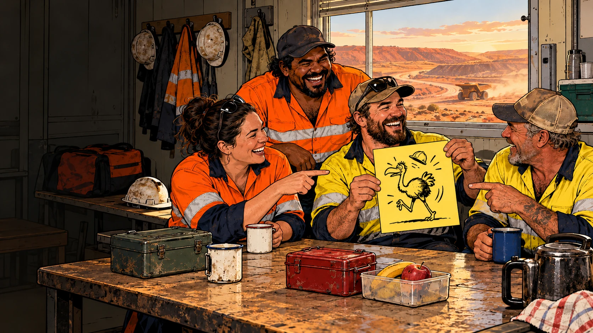
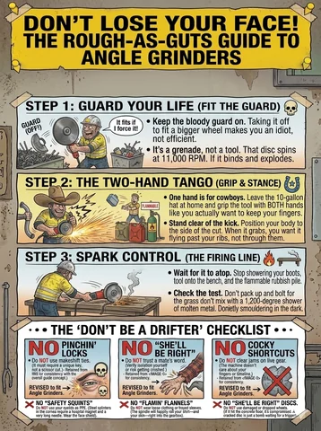
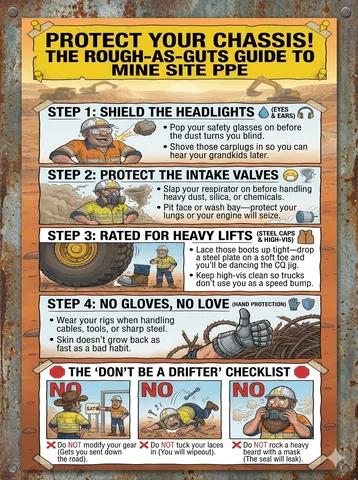
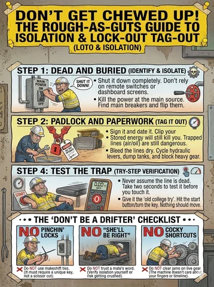

Work. Camp. Common sense.
Workshop posters, mine camps, shared facilities and the familiar moment when enthusiasm gets ahead of thought.
Give them something they’ll actually stop to read.
Rough as Guts began with illustrated mine-and-camp ideas. That setting has plenty of material: crib rooms, shared walls, fatigue, traffic, gear, cleaning up and people convinced they can save thirty seconds. The opportunity is to make a useful point memorable and get the details right.
Start with a real situation
A good workplace gag needs the grain of something a crew recognises. What keeps happening? What gets misunderstood? What small action would make the job or shared space work better? The source story gives the picture somewhere solid to stand.
- A familiar place and a specific moment.
- A behaviour the reader can recognise.
- A consequence that makes visual sense.
- A better action the reader can identify.
Camp life counts
The way people live together matters after the shift finishes too. Noise, bathrooms, laundry, meals, shared screens and cleaning are rich territory for humour with an immediately useful point.
- Quiet around people who are sleeping.
- Leaving shared facilities ready for the next person.
- Owning the mess you make.
- Handling small annoyances before they become camp-wide entertainment.
Choose the format for the job
A workshop poster needs to work from a few metres away. Big text, a clear picture and strong contrast help the point land quickly. A pocket card needs a quick point of reference. A booklet has room for examples. A short animation can show timing and consequences that one still picture struggles to explain.
- Posters: one message, a readable picture and a short caption.
- Toolbox-talk and newsletter material: one familiar scenario to discuss.
- Cards and booklets: concise reminders with room for necessary context.
- Manual illustrations: clear scenes tied to reviewed text.
- Short animations: a visible action and consequence.
A little humour in the SWMS
A Safe Work Method Statement (SWMS) sets out a particular job and its controls. Proposed illustrated SWMS support would use the actual task, conditions, hazards, controls and approved wording for that work. A general workshop poster has a broader communication role. Both can use humour, with the useful message clear and the job-specific details kept accurate.
- Identify the procedure, task and intended readers.
- Get the operational details from the people responsible for the work.
- Check the illustration against the reviewed wording.
- Keep the current approved source identifiable.
- Review changes in the situation before reusing material.
Make the picture earn its place
A joke about a bad habit can become confusing when the picture makes that habit look like the recommended method. Direction of travel, hand position, equipment, distances, labels and who is doing what all affect the meaning.
- Distinguish the bad example and the intended behaviour clearly.
- Show recognisable equipment and plausible physical actions.
- Check captions against what the picture actually depicts.
- Use reviewers who understand the task and setting.
Where the work stands
The library contains the original source deck, including unverified safety and medical claims, garbled lettering and some picture-and-caption mismatches. It is an archive of the starting material. Workplace products, reviewed adaptations and site-specific versions are in development.
- No source slide is presented here as approved training or an approved SWMS.
- Proposed formats show the direction of the project.
- A finished workplace item needs its own factual, visual and site review.
SWMS, in plain English
SWMS stands for Safe Work Method Statement. Safe Work Australia describes its role in high-risk construction work: identifying the activities, hazards and risk controls. Humorous illustration can support clear communication, while the actual task and site details belong in the reviewed document.
Read Safe Work Australia’s SWMS guidanceFrom Daz’s original pile
Original draft examples. Open the source record for readable text and source notes.


